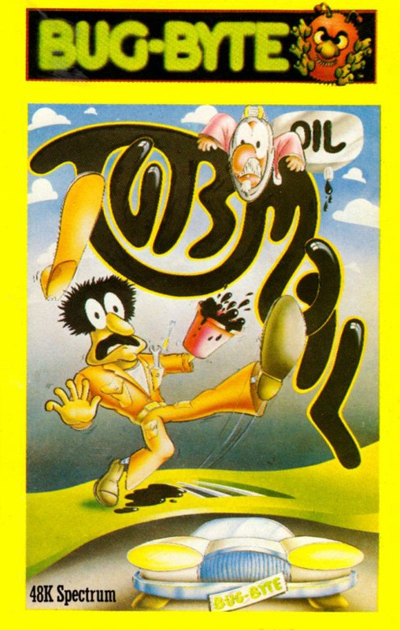
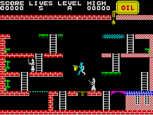
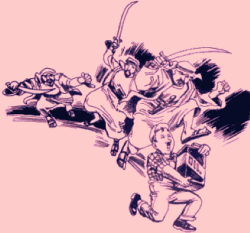

Turmoil


{kind=link}

| Publisher: | Bug-Byte |
| Price: | £6.95 |
| Year: | 1984 |
| Source: | CRASH, Issue 11 |

Here we have what Bug-Byte describe as a multi-screened animated platform-type game. Turmoil certainly is a platform game, although a very varied one, containing 26 screens with a multitude of hazards and layouts. The game features Mick the Mechanic, who must collect enough oil for his car to get it going. On each screen there is a different car sitting in the garage. It’s invisible until you start pouring oil over it which makes it appear. As soon as it is fully visible it will drive off and you get to the next screen. As you progress through the screens the cars get more sleek and expensive (from a Mini to a Porsche and beyond).

gain great height
On each screen there is a dripping tap of oil at the top. Mick must go and collect a can, then make his way to the tap and fill the can before going to the garage. Life is made more difficult by swinging ropes, poles, conveyor belts and a couple of angry Arabs who don’t approve of having their oil stolen. Now and again tools appear in different locations which ought to be collected and taken back to the shed structure at the bottom right of the screen, otherwise the Arabs will become angrier.
Any game must have something that distinguishes it from previous ones, and Turmoil has a very novel difference in the large spring-like trampolines which both Mick and the Arabs use to leap up onto the higher platforms. Mick’s only protection is to spill drops of oil on which the Arabs slip up, removing them from the game for a few moments. Unfortunately this is also guaranteed to kill Mick off as well if he’s not careful of where he treads.
CRITICISM

‘Turmoil is a classic platform game and overall a very good game. The graphics are of a high quality and work well with few attribute problems. The colours are excellent and everything makes for a slick, well executed program. This game is fun to play and addictive. If you like platform games then you will probably like Turmoil which is a bit different from the Manic Miner type game. Well worth buying.’
‘It must be said that this is quite an original platform game. Screen graphics are highly variable and exceptionally pleasing to the eye. Playing characters are large, well animated and detailed. I especially like the trampolines where you have to time it properly to jump when the tension in the spring is right to give you a high leap. Timing the swinging ropes is also difficult, although not half as difficult as some games which have used these devices — this is a pleasing factor. The pace of the game speeds up as you progress through the various screens, not in the sense that the characters move about more quickly, but in the sense that more tools appear and as a consequence the Arabs get angrier and come after you harder and there are more Arabs as you go along. I love the idea of having cars that alter from screen to screen, progressing from the low class Mini through high performance sports cars (and maybe onto the supertax bracket). Overall I think this game has a high playability factor, and each screen definitely needs a different skill factor.’
‘Originality in a game is sometimes a question of an entirely new idea, and sometimes it’s a question of intelligently re-using old ideas in a new way. Turmoil is one of the latter sort, and a very good one. All the elements have been combined like a classic recipe to make an excellently playable, funny and addictive game that has an entirely new flavour to it. There is also a very good training mode which gives you an opportunity to have a go on the higher screens for practice. There are marvellous animated graphics, and the leaping Arabs flashing their long scimitars are particularly good. A very good game that should keep you playing for quite some time.’
COMMENTS
| Control keys: | Q/Z up/down, I/P left/right and M to jump |
| Joystick: | Not indicated on the preview copy |
| Keyboard play: | Highly responsive — ‘a joy’ |
| Use of colour: | Excellent |
| Graphics: | Excellent |
| Skill levels: | Progressive difficulty |
| Lives: | 5 |
| Screens: | 26 |
| General rating: | Very addictive, playable and satisfying. Good value. |
| Use of computer: | 84% |
| Graphics: | 90% |
| Playability: | 91% |
| Getting started: | 89% |
| Addictive qualities: | 95% |
| Value for money: | 91% |
| Overall: | 90% |